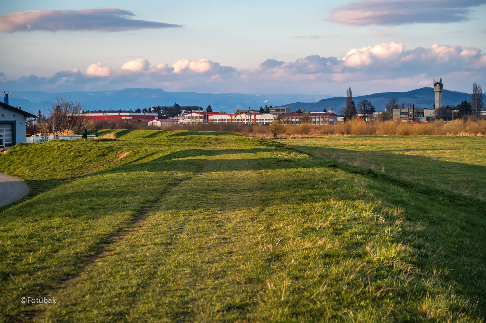

Reghin, mai demult Reghinul Săsesc, (în germană Sächsisch-Regen, în maghiară Szászrégen, Nagyrégen) este un municipiu în județul Mureș, Transilvania, România, format din localitățile componente Apalina, Iernuțeni și Reghin (reședința). Are o populație de 33.281 locuitori (2011). Vechea denumire a Reghinului este aceea de "Reghinul Săsesc" (traducere românească a denumirii germane "Sächsisch Regen", respectiv a celei ungurești, "Szaszregen"). Într-o diplomă emisă în anul 1228 de regele Andrei al II-lea al Ungariei, localitatea este menționată cu denumirea de "Regun". Comunitatea bisericească din Reghin a preluat reforma lui Martin Luther în anul 1551 prin preotul Josephus Kimpius. În anul 1555, pe un pilastru al zidului de incintă a orașului Reghin, fusese dăltuit următorul text, în limba germană: "Kein Heil kommt vom Krieg, den Frieden erbitten wir alle" (De la război nu vine nimic bun, ne rugăm cu toții pentru pace). Așezarea a fost împărțită în anul 1646 în două așezări: Reghinul Unguresc (Magyar-Régen) care s-a deprins de Reghin la ordinul principelui Gheorghe Rákóczi I. Reghinul Săsesc ocupa o poziție specială. În Reghinul Unguresc se afla partea istorică a așezării, deoarece biserica înălțată acolo este în stil roman. Aceste două așezări au fost despărțite prin Pârâul Trandafirilor, care izvorăște în nordul Pădurii Rotunde. Ioan Kemény a fost ales ca principe al Transilvaniei în orașul Reghin la data de 1 ianuarie 1661. "Societatea de plutărit" a fost, în ceea ce privește răspândirea și cuprinderea afacerii, de departe cea mai importantă din Reghinul Săsesc, chiar cea mai importantă din Transilvania. Această situație a fost favorizată în primul rând de poziția favorabilă a localității pe valea Mureșului, râu pe care veneau plutele din Munții Călimani. Comerțul cu lemnul și cu plutele a fost una din cele mai importante activități desfășurate de locuitorii vechiului Reghin. Poziția favorabilă a localității în apropierea munților Gurghiu și Călimani, cu suprafețele lor întinse de pădure, erau o adevărată provocare pentru spiritele întreprinzătoare din această localitate. În anul 1853 mai mulți negustori cu plute din Reghinul Săsesc s-au asociat într-o societate, conformându-se principiului care spune că unirea dă putere. Fiecare membru primea, pentru funcția sa, o remunerație potrivită. Deja în următorul an, 1854, mai mulți lipoveni contribuiau la această societate, astfel că cei din Reghin se ocupau cu procurarea și transportul plutelor iar lipovenii cu vinderea lor; dar pentru că lipsea coeziunea și o anumită conducere, nimeni nu mai asculta, fiecare voia să conducă după opinia sa. În anul 1855 mai mulți membri au ieșit afară din această așa zisă "companie" și împreună cu alți lipoveni au întemeiat "Compania de plutărit Wermescher", ai cărei membri finanțau activitatea. În anul 1863 Reghin a fost ridicat la rangul de oraș liber regesc. În anul 1924 a avut loc "încorporarea" Reghinului Unguresc (Reghin-sat, Magyarregen, Ungarisch-Regen) la oraș, care creștea astfel cu 995 ha în partea de nord. În același an orașul număra 160 de societăți comerciale, majoritatea în proprietatea micii burghezii. La baza dezvoltării tehnice s-a aflat construirea unei hidrocentrale, pionierii de zbor au realizat la marginea pădurii Mociar un câmp de zbor, care a fost bombardat în anul 1944 ca o țintă strategică. După schimbarea frontului din anul 1944, comunitatea germană (vezi Sașii transilvăneni) s-a refugiat în vest și doar o parte din ei s-a mai întors. După cel de-al Doilea Război Mondial orașul a devenit din nou românesc. O placă memorială la biserica săsească amintește astăzi destinul crunt al multor cetățeni deportați ai orașului, care la sfârșitul războiului au fost arestați și au fost obligați să muncească forțat în URSS. În anul 1948, în contextul interzicerii Bisericii Române Unite cu Roma, protopopul Reghinului, Alexandru Todea (1912 - 2002), a fost arestat de mai multe ori. Protopopul Todea a fost consacrat în clandestinitate ca episcop, iar în 1991 a fost numit cardinal. Pe 23 iunie 2000 patriarhul Teoctist și episcopul Andrei Andreicuț l-au vizitat pe cardinalul Todea la reședința acestuia din Reghin, unde se retrăsese din motive de sănătate.
Municipiul Reghin este împrejmuit de mai multe localități. Spre nord, pe DN15, prima localitate este Suseni (cunoscut și ca "Felfălău", "Felfalu", "Pränzdorf" sau "Oberdorf"), localitate atestată în anul 1319, urmată de localitatea Brâncovenești (cunoscută și ca "Ieciu", "Wetsch" sau "Marosvécs"), atestată în anul 1228, fiind situată la 12 km de Reghin. De la gara CFR, în continuarea străzii Gării, la aproximativ 3 km, se află localitatea Ideciu de Jos (cunoscută și ca "Untereidisch" sau "Alsoidecs"), atestată în anul 1319.[8] La est se învecinează cu comuna Solovăstru care are în componență satul Jabenița.
